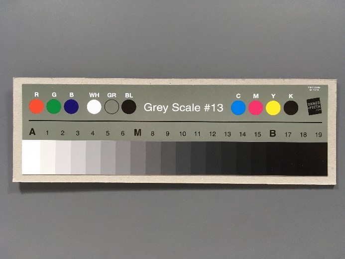
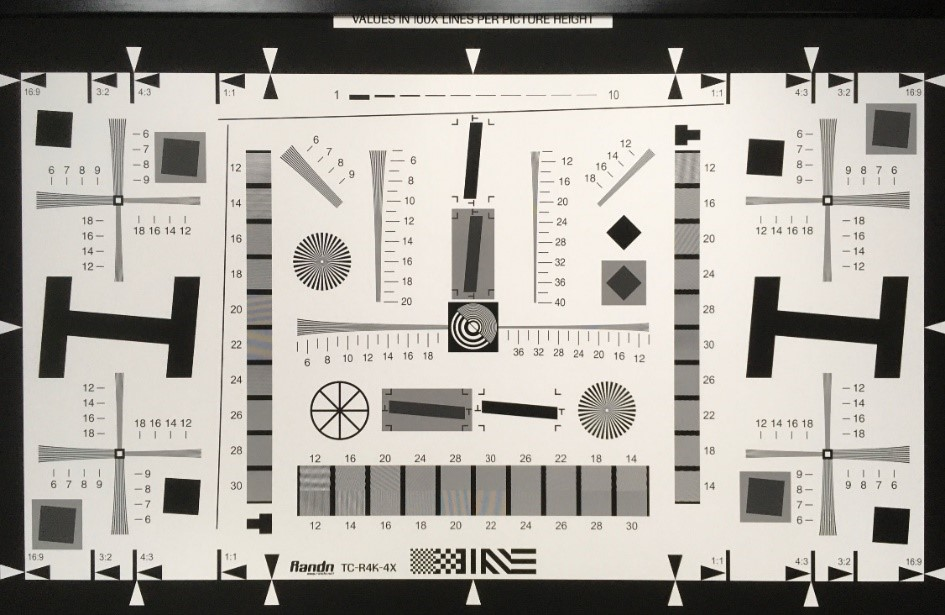
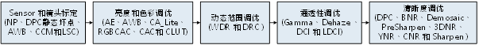

4. Overall Overview of Image Quality Tuning¶
The current ISP processor is mainly intended for IPC security applications, including linear and WDR modes.
Because of the specific requirements of the security industry, IPC security applications focus on different image-quality aspects than general consumer applications.
4.1. Overview of Image Tuning for IPC Applications¶
For IPC security applications, the current ISP processor provides two modes: linear mode and WDR mode.
These two modes focus on image brightness, reasonable and accurate colors, overall image transparency and sharpness, and noise suppression.
WDR mode additionally focuses on a reasonable overall dynamic range, preserving dark-area detail without overexposing bright areas.
The following sections describe image quality tuning methods and tuning principles for linear and WDR modes.
4.2. Image Quality Tuning in Linear Mode¶
Linear-mode image quality tuning focuses on four dimensions: brightness, color, transparency, and sharpness and noise. AE and LSC are related to brightness tuning;
AWB, CCM, and CLUT are related to color tuning;
Gamma, Dehaze, DCI, and LDCI are related to transparency tuning;
DPC, BNR, Demosaic, 3DNR, CNR, and Sharpen are related to sharpness and noise suppression.
IPCapplication scenarioinlinearmodeunderImage Quality Tuningthe relevant informationFigureas Figure 4.1 as shown.

Figure 4.1 IPCapplication scenariolinearmodeofimagetuningthe relevant informationFigure¶
Note: CV184x does not support static DPC defects and does not require NP calibration. The YNR module is integrated into 3DNR and is no longer a separate module.
4.2.1. Sensor Integration¶
Sensor integration connects the processor to a Sensor such as the IMX327. Verify that the complete path operates correctly, modes switch smoothly, module parameters drive the Sensor reasonably with default values, and basic AE functions operate as expected.
4.2.2. Sensor and Lens Calibration¶
The Sensor and lens calibration flow is shown in Figure 4.2 as shown, the relevant informationandofmainlyStepincludingBlack Level Calibration, Noise Profilecalibration, the relevant informationdefective pixelcalibration, LSC CalibrationandAWBandCCMcolorcalibration.
{kind=link}
Figure 4.2 Sensor and Lens CalibrationofflowFigure¶
Note: CV184x does not support static DPC defects and does not require NP calibration.
Black Level Calibration: ISPoverallcalibrationflowoffirst stepthe relevant informationBlack Level Calibration, itsspecificcalibrationmethodthe relevant information Black Level Calibrationmethod section.
LSC Calibration: LSC Calibrationofmainlyitemofthe relevant informationbyinlensofthe relevant informationnotthe relevant informationandthe relevant informationofframethe relevant information, calibrationofmethodthe relevant informationis Mesh LSC (MLSC).inlowthe relevant informationunder, framethe relevant informationofnoisebecauseisShadingandthe relevant informationnotthe relevant information, canthroughMeshStrperformadjust.specificcalibrationmethodrefer to LSC Calibrationmethod section.
AWB Calibration: AWB Calibrationofthe relevant informationmainlyisinthe relevant informationlight sourceunderthe relevant informationpointinformation, that isR/GandB/G, the relevant informationcolor temperaturethe relevant informationcurve.byinAWBthe relevant informationSensorandlensofthe relevant informationrelated, becausethis, the relevant informationlensorthe relevant information, the relevant informationneedthe relevant informationcalibrationAWBcoefficient.specificcalibrationmethodrefer to AWB Calibrationmethod section.
CCM Calibration: CCM Calibrationofmainlythe relevant information3x3the relevant information, the relevant informationbysensorcapturethe relevant informationof24color chartthe relevant information18the relevant informationcolor patchthe relevant informationofthe relevant informationcolorvalueandthe relevant informationvalueofdifferencethe relevant informationcanthe relevant information.generallyusethe relevant informationlight source (D50, TL84andA) underthe relevant informationofrawthe relevant informationCCMofcalibration.specificcalibrationmethodrefer to CCM Calibrationmethod section.
After Sensor and lens calibration is complete, tune the image quality of each ISP module, including optimization for different ISO settings.
linearmodeunderthe relevant informationneedtuningofsceneincludinglaboratorystatic subjectsceneandoutdoorthe relevant informationscene.generallyandthe relevant information, the relevant informationinnotsameilluminationunderforlaboratorystatic subjectscenecompleteISPthe relevant informationmoduleofParametertuning, willimagequalityofthe relevant informationincludingbrightness, color, contrastandsharpnessandnoiseetc.tuningreasonable.the relevant information, inoutdoornotsameofthe relevant informationsceneperformthe relevant informationtune, the relevant informationofrangethe relevant informationisdaytimeandnight, the relevant informationandthe relevant informationweatherandthe relevant informationetc.detailthe relevant informationofsceneetc..
linearmodeimagequalityaccording toabovethe relevant informationoftuningthe relevant informationFigureas Figure 4.3 as shown.

Figure 4.3 imagequalitytuningofthe relevant informationFigure¶
Note: CV184xofYNRmodulethe relevant informationin3DNRthe relevant information, notthe relevant informationhasthe relevant informationofYNRmodule.
4.2.3. Brightness¶
forBrightnessoftuning, mainlythe relevant informationadjustmentAEmoduleofAE weightTable, AE Route, AEtarget valueandAEofconvergencespeedandsmoothnessetc., the relevant informationreasonableofimageoverallbrightness.inadjustAEbefore, firstverifyBlack LevelandLSCalreadycompletecorrection.
Step 1. determineAEweightTable.forIPCapplication scenario, generallywillthe relevant informationframeofthe relevant informationarea, becausethisAEweightTableofthe relevant informationpartofweightthe relevant informationwillhighinthe relevant informationpart.
Step 2. determineAE Routedetermineexposureofthe relevant informationwaythe relevant information, notsameofapplication scenarioneedsetnotsameofexposure timeandgainthe relevant informationofthe relevant information
Step 3. forlaboratorystatic subjectscene, adjustmentAEoftarget value.recommendthe relevant informationbright areanotoverexposureisthe relevant information.
Step 4. forinnotsameofapplication scenario, tuningAEofconvergencespeedandsmoothness, the relevant informationbalance.adjustmentofprinciplethe relevant informationinthe relevant informationAEthe relevant informationofthe relevant informationunder, the relevant informationcanthe relevant informationhighconvergencespeed.generallycaninlaboratorystatic subjectsceneunderthe relevant informationbyswitchthe relevant informationperformthe relevant informationAEofconvergencespeedandsmoothness.
— End
4.2.4. Color¶
Colorofadjustmainlythe relevant informationandofmodulehasAWBandCCM.inadjustcolorbefore, firstverifyBlack LevelandLSC CalibrationcompleteandAEmoduleParametercompletetuning.
Step 1. uselaboratorythe relevant information, inD65, D50, AandoutdoorsceneofD50color temperatureoflight sourceunderfor24color chartperformAWB Calibration, the relevant informationobtainwhite balancecoefficient.the relevant information, canthe relevant informationlight source, asTL84andCWFetc.canthe relevant informationhighcalibrationofaccurateproperty.
Step 2. uselaboratorythe relevant information, inD50, TL84andAthe relevant informationlight sourceunderfor24color chartperformCCM Calibration, the relevant informationgenerate3x3the relevant information.
Step 3. afterAWBandCCM Calibrationcompletethe relevant information, the relevant informationImatestthe relevant informationdifferent light sourcesunder24color chart, the relevant informationverifycalibrationthe relevant informationofAWBcoefficientandCCMthe relevant informationwhetherthe relevant informationRequirements.
Step 4. inlaboratorysceneobtainthe relevant informationverifyafter, the relevant informationneedthe relevant informationamountofoutdoorscenethe relevant information, the relevant informationofthe relevant informationsceneincludingthe relevant informationandlight source, the relevant informationandthe relevant information, the relevant informationandthe relevant informationandthe relevant information.AWBandCCMspecificTuning Methodrefer to AWB Tuningmethod and CCM Tuningmethod section.
— End
4.2.5. Contrast¶
Contrastofadjustmainlythe relevant informationandofmodulehasGamma, DCI, LDCIandDehaze.generallyusingGammaismainlytuningmodule.inadjustcontrastbefore, firstverifyBlack LevelandLSC Calibrationcomplete, AEmodule, AWBandCCMParametercompletetuning.
Step 1. throughGammaParameteradjustGammacurve, the relevant informationoverallimageobtainthe relevant informationofcontrast, inbright areaanddark areathe relevant informationdetail.GammamoduleofspecificTuning Methodrefer to Gamma Tuningmethod section.
Step 2. ifthe relevant informationperformcontrasttuning, tuningprincipleusingLDCIismain, DCI andDehazeisthe relevant information.LDCIcanthe relevant informationcontrastenhancement, the relevant informationframethe relevant informationofbright areaanddark areaindetailofTablethe relevant information.LDCIofspecificTuning Methodrefer to LDCI Tuningmethod section.DCIandDehazeofspecificTuning Methodrefer to DCI Tuningmethod and Dehaze Tuningmethod section.
Step 3. whenGamma, LDCI, DCIandDehazeofParameterthe relevant informationafter, the relevant informationinlaboratorythe relevant informationD50light sourceunderthe relevant information, the relevant informationnumbernotlowin18the relevant information. Figure 4.4 isthe relevant informationillustrationFigure.
Step 4. innotsameofISOunder, forlaboratorystatic subjectscenethe relevant informationwhenthe relevant informationtuningGamma, LDCI, DCIandDehaze, the relevant informationoverallframeofcontrastthe relevant informationRequirements.inlowilluminationenvironmentunder, recommendcontraststrengthnotthe relevant information, usingthe relevant informationnoisethe relevant informationenhancement.
— End
{kind=link}

Figure 4.4 the relevant informationillustrationFigure¶
4.2.6. Sharpness and Noise¶
Sharpness and Noiseofadjustmainlythe relevant informationandofmodulehasDPC, BNR, Demosaic, 3DNR, CNRandSharpen.
asilluminationofnotsame, noiseofTablethe relevant informationwillnotsame.
becausethis, sharpnessandnoisemoduleofParameterwillasISOthe relevant information.
tuningprinciple, recommendthe relevant informationusingsharpnessisthe relevant information, inimagethe relevant informationpointdetailandtexturethe relevant informationofthe relevant informationunder, the relevant informationtuningnoise reductionmodule.
inadjustsharpnessandnoisebefore, firstverifyBlack LevelandLSC Calibrationcomplete, AEmodule, AWB, CCMandGammaParametercompletetuning.
Step 1. the relevant information, uselaboratorythe relevant information, inenvironmentD50light sourceunderandISO100ofthe relevant informationunder, forresolutionthe relevant informationadjustmentDemosaicParameterthe relevant informationRequirements. the relevant information, usethisthe relevant informationDemosaicParameter, the relevant informationinISO100underlaboratorystatic subjectscenerun, whetherthe relevant informationexampleasitshighthe relevant informationdetailthe relevant information, andandperformthe relevant informationtuning. Figure 4.5 isresolutionthe relevant informationillustrationFigure.
DemosaicspecificTuning Methodrefer to Demosaic Tuningmethod section.
Step 2. generallyandthe relevant information, the relevant informationtuning3DNRthe relevant informationimagethe relevant informationareaofnoisethe relevant informationconvergencethe relevant informationstatusandmotionareaoftrailingthe relevant informationreasonablecontrol, the relevant informationframeofsharpnessthe relevant information, itsspecificTuning Methodrefer to 3DNR Tuningmethod section.next, overallimageofluma noiseandchroma noisesuppressioncanrespectivelyreferenceBNR( BNR Tuningmethod section) , CNRmodule ( CNR Tuningmethod section).the relevant informationNoteofthe relevant information, BNRthe relevant informationrawdomainofnoise reduction, tuningprinciplethe relevant informationinthe relevant informationdetailofthe relevant informationunder, suppressionoverallframeofnoise, becausethisrecommendnoise reductionstrengthnotthe relevant informationtuningthe relevant information.
Step 3. imagesharpeningoftuningincluding3DNRthe relevant informationofPreSharpenmodule, andin3DNRthe relevant informationofSharpenmodule, itsParameterthe relevant informationaccording toISOperformthe relevant information.basictuningthe relevant informationisin3DNRbeforethe relevant informationwhenthe relevant informationenhancementimagedetailtextureandedgethe relevant information, andinavoidthe relevant informationnoisethe relevant informationinthe relevant informationofthe relevant informationunder, the relevant informationtuning3DNRafterwardofsharpening, enhancementimageofthe relevant informationedge, specificTuning Methodthe relevant informationrespectivelyreference( PreSharpen section) and Sharpen Tuningmethod section.
Step 4. DPCmoduleofdynamicthe relevant informationdefective pixelFunctionifthe relevant informationinilluminationthanthe relevant informationofthe relevant informationunder, recommenditsrelatedParameterstrengthsettingisminimumthat iscan.andinilluminationthe relevant informationlowofenvironmentthe relevant informationunderthe relevant informationtuningDPCdynamicthe relevant informationdefective pixelParameter.
— End
{kind=link}

Figure 4.5 resolutionthe relevant informationillustrationFigure¶
4.3. Image Quality Tuning in WDR Mode¶
WDRmodeofImage Quality Tuningmethodmainlythe relevant informationofthe relevant informationhasimageofbrightness, color, dynamic rangetransparencyandsharpnessetc.waythe relevant information, among themandbrightnesstuningrelatedofmodulehasAEandLSCetc.;
andcolortuningrelatedofmoduleAWB, CCM, CA Lite, PFRandCLUTetc.;
anddynamic rangetuningrelatedofmodulehasWDRandDRCetc.;
Gamma, Dehaze, DCI, and LDCI are related to transparency tuning;
DPC, BNR, Demosaic, 3DNR, CNR, and Sharpen are related to sharpness and noise suppression.
hasthe relevant informationsceneneeduseWDRmode, that isthe relevant informationscenethe relevant informationofbrightnessthe relevant informationandnightthe relevant informationandthe relevant informationofthe relevant informationsuppressionscene.
IPCapplication scenarioWDRmodeofImage Quality Tuningthe relevant informationFigureas Figure 4.6 as shown.
{kind=link}

Figure 4.6 IPCapplication scenarioWDRmodetuningthe relevant informationFigure¶
Note: CV184x does not support static DPC defects and does not require NP calibration. The YNR module is integrated into 3DNR and is no longer a separate module.
incompleteabovethe relevant informationofcalibrationthe relevant information, the relevant informationforthe relevant informationofapplication scenario, respectivelyisthe relevant informationscenethe relevant informationofbrightnessthe relevant informationandnightthe relevant informationsuppressionscene, performImage Quality Tuning in WDR Mode.
usingunderforthisthe relevant informationapplication scenariorespectivelyDescriptionTuning Method.
4.3.1. WDRmodethe relevant informationscenethe relevant informationofbrightnessthe relevant informationTuning Method¶
WDRmodeofthe relevant informationscenesettingisimagethe relevant informationincludingthe relevant informationofbright areaanddark areaandthe relevant informationunderthe relevant information, as Figure 4.7 as shown.forthe relevant informationsceneunderthe relevant informationofbrightnessthe relevant informationimagequalityofTuning Methodthe relevant informationofthe relevant informationas follows:

Figure 4.7 the relevant informationunderthe relevant informationscene¶
4.3.2. Brightness¶
WDRmodeofbrightnessTuning Methodandlinearmodeoverallthe relevant information, specificmethodrefer to Image Quality Tuning in Linear Mode ofBrightnessthe relevant information, butmainlydifferencethe relevant informationininlongthe relevant informationandthe relevant informationofexposure timethe relevant informationbyAEofadjustthe relevant informationdetermine.the relevant information, AEofexposurethaninnotsamesceneunderthe relevant informationadjustment, determineWDRmodeimageofdynamic range.
4.3.3. Motion Trailing in the Synthesis Region¶
AEexposurethanandWDRmoduleismainlyimpactimagethe relevant informationfusionregionofmotiontrailingthe relevant informationofbecausethe relevant information.morethe relevant informationAEexposurethan, morethe relevant informationmotiontrailingthe relevant information.inthe relevant informationofthe relevant informationsceneunder, WDR 2the relevant information1modeunderthe relevant informationofAEofexposurethanthe relevant informationis4-32times, inthisthe relevant informationunder, WDRmoduleisthe relevant informationfusionregionofmotiontrailingofmainbecause.becausethis, intuningWDRofthe relevant information, throughtuninglongthe relevant informationfusioncurveandtuningmotiondetectionParameter, decreasemotiontrailingofthe relevant information.WDRspecificTuning Methodrefer to WDR .
4.3.4. Scene Dynamic Range¶
AEexposurethan, Map Curve, DRCandGammamoduleismainlyimpactscenedynamic rangeofbecausethe relevant information.Map Curvecanforthe relevant information, samewheninthe relevant informationdegreeabovethe relevant informationofcontrast, specificTuning Methodrefer to WDR .DRCandGammacanfordark areabrightnessdothe relevant information.the relevant informationthaninDRC, Gammathe relevant informationofsamewhen, the relevant informationcontrastofloss.the relevant information, DRCthe relevant informationprotectionthe relevant informationbrightness.DRCspecificTuning Methodrefer to DRC .
4.3.5. Color¶
WDRmodeunderthe relevant informationincolorofTuning Methodandlinearmodeoverallthe relevant information, specificmethodrefer to Image Quality Tuning in Linear Mode ofColorthe relevant information.
4.3.6. Contrast¶
WDRmodeofcontrasttuningmainlyandMap Curve, DRC, GammaandDehaze, LDCI, DCIrelated.inthroughMap Curve, DRC, Gammathe relevant informationhighdynamic rangeofwhenthe relevant information, the relevant informationamountminimumdegreeimpactcontrastofloss.afterward, canthroughDehaze, DCIcompensationthe relevant informationcontrast, LDCIcanenhancementthe relevant informationcontrast.
4.3.7. Sharpness and Noise¶
WDRmodeofsharpnessandnoiseTuning Methodandlinearmodeoverallthe relevant information, specificmethodrefer to Image Quality Tuning in Linear Mode ofSharpness and Noisethe relevant information.
4.3.8. WDRmodenightthe relevant informationsuppressionsceneTuning Method¶
WDRmodeofnightthe relevant informationsuppressionofthe relevant informationpointapplicationthe relevant informationnightofthe relevant informationscene, asthe relevant informationorthe relevant informationetc., as Figure 4.8 displaygenerallythe relevant informationapplicationundersceneillustrationFigure.

Figure 4.8 nightthe relevant informationscene¶
the relevant informationforinthe relevant informationapplication scenario, nightthe relevant informationsuppressionofthe relevant informationsceneofTuning Methodthe relevant informationofthe relevant informationas follows:
4.3.9. Brightness¶
WDRmodeinnightthe relevant informationsuppressionsceneofbrightnessTuning Methodsimilar to the backlightscenethe relevant information, specificmethodrefer to the backlight section abovesceneforBrightnessofDescription.butmainlydifferencethe relevant informationininAEforthe relevant informationofimpactandAEofexposure timeforthe relevant informationmotionthe relevant informationofimpact.the relevant information, the relevant informationisoverexposurearea, WDRwillselectthe relevant information, andthe relevant informationWDRwillselectlongthe relevant informationfusion.becausethis, recommendofTuning Methodisinthe relevant informationAEweightTablewhen, inthe relevant informationofweightthe relevant informationgreater thanframethe relevant informationofarea.the relevant informationtuningAEtarget value, the relevant informationavoidthe relevant informationofthe relevant information.the relevant information, throughAE Routeofset, limitthe relevant informationexposure time, andusegainisthe relevant information, avoidthe relevant informationmotionthe relevant information.
4.3.10. Motion Trailing in the Synthesis Region¶
WDRmodeundernightthe relevant informationsuppressionoffusionregiontrailingofTuning Methodsimilar to the backlightscenethe relevant information, refer to the backlight section abovesceneforfusionregionofmotiontrailingDescriptionthe relevant informationperformtuning.
4.3.11. Scene Dynamic Range¶
WDRmodeundernightthe relevant informationsuppressionofscenedynamic rangeofspecificTuning Methodsimilar to the backlightscenethe relevant information, refer to the backlight section abovescenefordynamic rangeofDescriptionthe relevant informationperformtuning.the relevant informationNoteofthe relevant informationgenerallynightsceneunderAEexposurethanthe relevant informationsetis8-16timesthe relevant information.
4.3.12. Color¶
WDRmodeundernightthe relevant informationsuppressionofcolorTuning Methodsimilar to the backlightscenethe relevant information.becausethis, canreferenceabovethe relevant informationofthe relevant informationsceneforColorofDescriptionthe relevant informationperformtuning.
4.3.13. Contrast¶
WDRmodeunderthe relevant informationsuppressionofcontrastTuning Methodsimilar to the backlightscenethe relevant information, refer to the backlight section abovesceneforContrastofDescriptionthe relevant informationperformtuning.the relevant informationNoteofthe relevant informationavoidDCIoftuningthe relevant information, orthe relevant informationGammacurveofadjustthe relevant informationdark areanoisethe relevant information.becausethis, the relevant informationofthe relevant informationsizeanddark areanoiseandcontrastthe relevant informationofbalancedothe relevant informationoftuning.
4.3.14. Sharpness and Noise¶
WDRmodeunderthe relevant informationsuppressionofsharpnessandnoiseTuning Methodsimilar to the backlightscenethe relevant information, refer to the backlight section abovesceneforContrastofDescriptionthe relevant informationperformtuning.needNoteofthe relevant informationwhenthe relevant informationtuning3DNRandYNRthe relevant informationbalancemotionareaofnoiseandtrailingthe relevant information, avoidimpactthe relevant informationofthe relevant information.